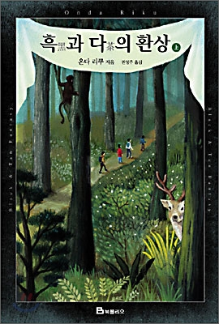
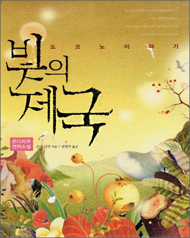
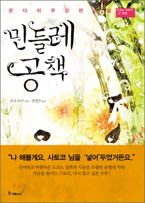
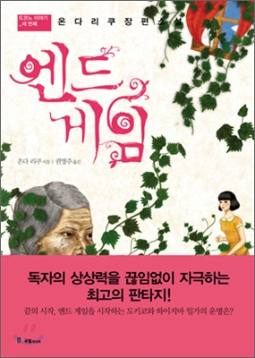

시리즈 소개
삼월 시리즈
 |
 |
 | |
|---|---|---|---|
| 삼월은 붉은 구렁을 | 보리의 바다에 가라앉는 열매 | 황혼녘 백합의 뼈 | 흑과 다의 환상 |
삼월 시리즈는 작가의 대표작 중 하나인 <삼월은 붉은 구렁을>을 포함하여 <보리의 바다에 가라앉는 열매>,
<황혼녘 백합의 뼈>,<흑과 다의 환상 上,下>까지 총 다섯권으로 구성되어있다.
<삼월은 붉은 구렁을>에 등장하는 수수께끼의 소설 '삼월은 붉은 구렁을'의 1부를 다룬 내용이 바로 <흑과 다의 환상>이며,
4부의 주인공이 쓰는 소설 속 인물인 '미즈노 리세'에 대해 다룬 내용이 <보리의 바다에 가라앉는 열매>와 <황혼녘 백합의 뼈>이다.
도코노 시리즈
|  |  |  |
|---|---|---|
| 빛의 제국 | 민들레 공책 | 엔드게임 |
도코노 시리즈는 <빛의 제국>,<민들레 공책>,<엔드게임> 총 세 권으로 구성되어 있으며, 신비한 능력을 가진 도코노 일족의 이야기를 다룬다.
온다 리쿠의 작품은 대체로 연작이거나 단편을 묶은 단편집이 많은데, <빛의 제국>은 그 중에서도 도코노 일족의 이야기만을 다룬 단편집이다.
그에 비해 <민들레 공책>과 <엔드게임>은 단편에서 뻗어나가 더 깊고 긴 이야기를 다룬다.
간바라 메구미 시리즈
 |
||
|---|---|---|
| 메이즈 | 클레오파트라의 꿈 | 블랙 벨벳 |
간바라 메구미 시리즈는 <메이즈>,<클레오파트라의 꿈>,<블랙 벨벳> 총 세 권으로 구성되어 있으며, 주인공 '간바라 메구미'가 괴이한 사건과 얽히며 이를 풀어가는 이야기를 다루고 있다.